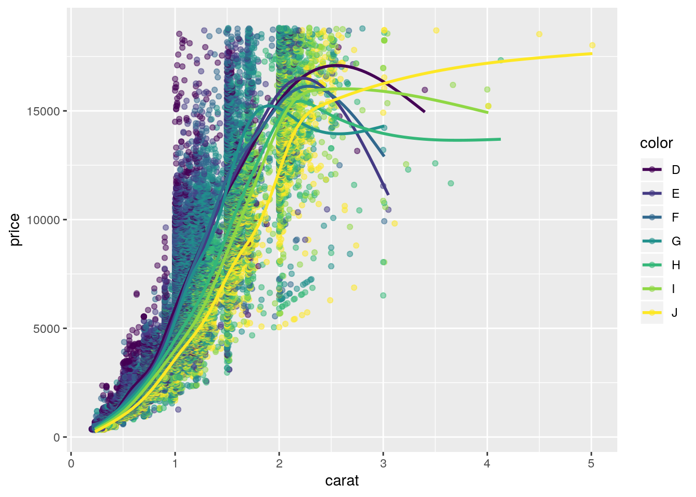

Wie auch bei den Tipps, sollte die offene Abschnitt der Lösungen nicht direkt die Lösung zeigen, sondern zunächst eine Vorwarnung enthalten. Außerdem sollte hier nochmal direkt auf die Tipps hingewiesen werden.
Für den Fall, dass die Nutzer*innen mit bestimmten Teilabschnitten einfach nicht weiterkommen und mehr als einen Tipp dafür, aber nicht für alles, benötigen, sollten die Lösungen in inhaltlich sinnvolle Abschnitte gegliedert sein. Auf diese spezifischen Inhalte sollte hier hingewiesen werden.
In diesen Abschnitten sollte mit Text und R-Code erklärt werden, wie zu einer möglichen Lösungen gekommen werden kann. Gegebenenfalls können auch zwei (oder mehr!) alternative Ansätze dargestellt werden. Diese sollten hier oben aber schon erwähnt werden, z.B. mit Ansatz A und Ansatz B.
Daten können erst heruntergeladen und dann aus der Datei geladen werden:
download.file('https://vincentarelbundock.github.io/Rdatasets/csv/ggplot2/diamonds.csv', './daten/diamonds.csv')
dia <- read.csv('./daten/diamonds.csv')Das hat den Vorteil, dass große Datensätze nur ein mal die Zeit benötigen um heruntergeladen zu werden…
Datensätze können direkt aus URLs in R eingelesen werden:
dia <- read.csv('https://vincentarelbundock.github.io/Rdatasets/csv/ggplot2/diamonds.csv')Das hat den Vorteil, dass Code von jedem Rechner mit einem Internetzugang identisch ausgeführt werden kann und keine Veränderungen auf Festplatte festgehalten werden.
In den meisten Fällen sollen Grafiken das Endprodukt der Projekte sein, weil dadurch Ergebnisse leicht und ansehnlich kommuniziert werden können:
library(ggplot2)
data(diamonds)Durch die “Anzeigen” / “Verstecken” Funktionalität wird es besonders wichtig, das Vorgehen durch kleinschrittige Erklärungen nicht nur inhaltlich, sondern auch optisch zu gliedern.
ggplot(diamonds, aes(x = carat, y = price, group = color)) + geom_point(aes(color = color), alpha = .5) + geom_smooth(se = FALSE, aes(color = color))## `geom_smooth()` using method = 'gam' and formula 'y ~ s(x, bs = "cs")'